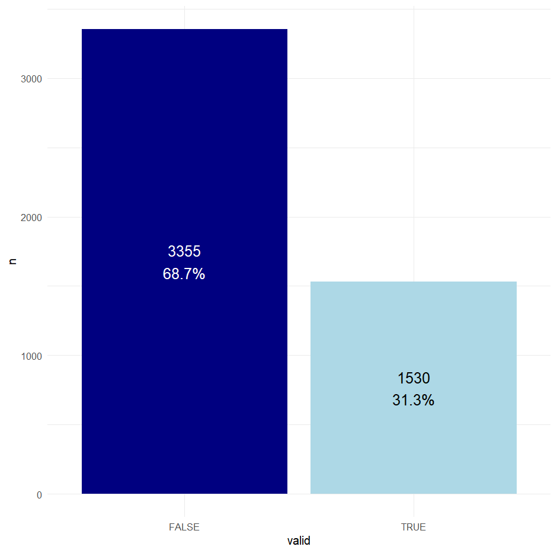

Introduction
The term has begun now, so I have less time to spend on this work. There are some things from last week that have spilled over into this week. I can refer to the week 11 notebook and pull that list of stuff over later.
Methods
Local storage of files
I was looking around for the best way to store the large amount of protein data I now have locally. I have found that something which may work is to use my home NAS (Network Attached Storage) and connect to it via the rclone programme. I can see other people on hawk used it to connect to cloud storage. I started by checking my machine could interface with the NAS by using the command “ping [my-NAS].myqnapcloud.com”. Which returned successfully. Now I have to try the same thing on hawk, that was successful.
I then ran “module load rclone/1.64.0” and “rclone config”, the personal steps inside that configured the NAS with rclone, this has not lead anywhere at the moment. I will have to consult with Claude.ai about how to get it working (if this is the right avenue to go down at all).
Host metadata analysis
I would like to begin this process today, its something quick and easy I can do inside of all the more difficult stuff. I created the script “host_metadata_informatics” to do this. This file reads in both metadata files, however, the important one is “accession_information_43668_1696_33882_53335_13687_2025-09-10.rds”. I am going to need to extract host information for each accession from inside the list structure “assembly info” > “biosample” (where it is present). To do that I am going to need to probably employ both for loops and lapply statements.
I need to remember that this data is often split between “host” and “isolation_source”, so I am going to need to get both fields. The process of parsing information from deep in a list was much harder than I thought it was going to be. I decided to make a game of it, and now have 4 equally bad ways of doing it, because apparently it is just something that is a pain to do. I then moved onto data manipulation so that the data frames could be used for proper visuals. To do this, I am cutting out all “missing”, “not given”, etc fields from a unique list. To do this I am using excel on a .csv I wrote out called “unique_host_data.csv” in 02_analysis/metadata. After a bit of playing around with and remembering how to use ggplot2, I created a sample bar chart that just shows the proportions of accessions that do and don’t have host info.
I then went on to create a matrix showing the top 5 hosts for each of the 5 bacterial genera of interest. This required further manipulation to make the object a count. Then I used the flextable package to make a table with specific styling which makes it look like a matrix.
GTDB-Tk
I am having some trouble thinking about how I would go about mentioning that the 10 samples are what they are without saying “I ran them through gtdbtk a year ago”. So I may as well just do that process again, after reading a paper or two about it so I know how to do it right this time.
Results
Key findings, observations, and data from this week’s work.


Conclusion
Summary of outcomes, implications, and next steps.
Scientific Papers
Relevant literature read this week.
The preprint - “The Genetic Basis of Bacterial Adaptation to Hosts” (Segev et al. 2025)
“Comparison of functional classification systems” (Zeller and Huson. 2022)
“a user’s guide to the bioinformatic analysis of shotgun meagenomic sequence data for bacterial pathogen detection” (Lindner et al. 2023)